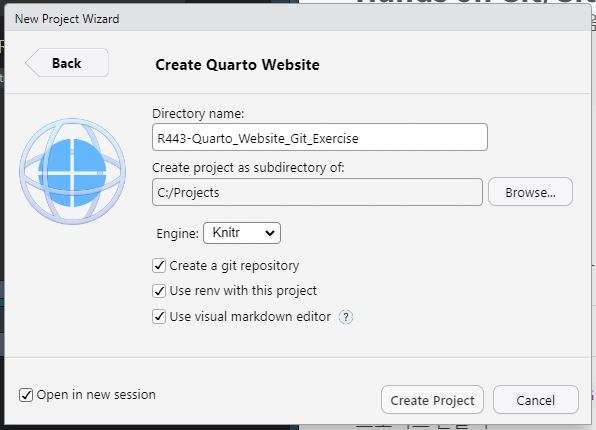

Directory name으로 Rxyz-Quarto_Website_Git_Exercise 입력
Create Project 버튼클릭
recommeded project name
Rxyz-Quarto_Website_Git_Exercise

그림 1: 새로운 프로젝트 만들기 설정창
4 Git 버전관리 시작하기
3단계: .gitignore 파일을 열어서 Git 버전관리 예외로 설정된 파일/폴더 목록 확인하기
3단계 예시
Git 버전관리를 할 때, 프로젝트파일들에서 무조건 제외하면 좋은 파일들이 있습니다. 예를 들어서 RStudio에서 생성되는 .Rproj.user, .Rhistory, .RData, .Ruserdata 파일들의 경우는 버전관리를 할 필요가 당연히 없기 때문입니다. 이러한 경우를 위해서 Git에서는 버전관리에서 무조건 제외하는 파일들을 .gitignore라는 숨김파일로 관리하고 있습니다. 실제적으로는 매우 중요한 파일이므로 잘 설정해서 버전관리를 효율적으로 해야 하므로 반드시 이해하고 넘어가야 할 파일입니다.
Output pane Files 탭에서 .gitignore 파일을 열면 다음과 같이 기록되어 있습니다. 이것은 기본적으로 Quarto Website 프로젝트를 만들때는 제외하도록 설정되어 있습니다.
.gitignore
.Rproj.user.Rhistory.RData.Ruserdata
5 Git 버전관리 상태확인
4단계: git status 실행하여 branch 이름과 untracked file 목록을 확인하기
4단계 예시
RStudio Terminal tab
git status
git status output
C:\Projects\R443-Quarto_Website_Git_Exercise>git statusOn branch mainNo commits yetUntracked files: (use "git add <file>..." to include in what will be committed) .Rprofile .gitignore R443-Quarto_Website_Git_Exercise.Rproj _quarto.yml about.qmd index.qmd renv.lock renv/ styles.cssnothing added to commit but untracked files present (use "git add" to track)
Git status 명령은 Git 버전관리상태를 알고자 할 때 사용하는 Git 명령어입니다.
이 명령으로 발생하는 메세지를 반드시 다 이해해야 Git를 사용할 수 있는 것은 아니지만 Git 버전관리에 따른 파일의 상태를 실제 메세지에서는 어떻게 표현하는지 알아보기 위해 메세지 구성별로 알아보도록 하겠습니다.
On branch main
현재 작업 중인 브랜치가 main임을 나타냅니다. 즉, 현재 main 브랜치에서 작업하고 있다는 의미입니다.
No commits yet
아직 커밋이 하나도 이루어지지 않았음을 보여줍니다.
Untracked files:
Git이 아직 추적하지 않는 파일들이 있다는 뜻입니다.
괄호 안의 안내 메시지 (“use”git add <file>…” to include in what will be committed”)는 해당 파일들을 추적 대상으로 포함시키고 싶다면, git add 명령어를 사용하라는 의미입니다.
목록에 나열된 파일들(예: .Rprofile, .gitignore, R443-Quarto_Website_Git_Exercise.Rproj 등)은 현재 Git이 관리하고 있지 않은 상태입니다.
nothing added to commit but untracked files present (use “git add” to track)
스테이지 영역에 추가된 파일은 없지만, 추적되지 않는 파일들이 존재함을 다시 한 번 요약해 줍니다. 이 경우, 커밋할 파일이 없으므로 아무 것도 커밋되지 않음을 알 수 있습니다.
Enviroment pan Git tab에서도 같은 결과를 보여줍니다. 파일/폴더는 Path 컬럼에 보여지고, Staged는 check되어 있지 않으며 Status는 모두 ?? 표시된 상태입니다.
6 Git 버전관리 제외대상 결정하기
5단계: .Rprofile, Rproj 확장자인 모든 파일, renv 폴더를 버전관리대상에서 제외하기
5단계 예시
RStudio에서 .gitignore 파일을 열어서 아래의 내용을 추가합니다.
.gitignore
.Rprofile*.Rprojrenv/
.gitignore 파일을 저장하면 Envoriment pan Git tab에서 .gitignore에 추가했던 파일들이 제외되었음을 알 수 있습니다.
git status 명령을 실행하여 변경사항을 확인합니다
git status output
C:\Projects\R443-Quarto_Website_Git_Exercise>git statusOn branch mainNo commits yetUntracked files: (use "git add <file>..." to include in what will be committed) .Rproj.user/ .gitignore _quarto.yml about.qmd index.qmd renv.lock styles.cssnothing added to commit but untracked files present (use "git add" to track)
untracked file 목록에서 .gitignore에 추가했던 파일들이 제외되었음을 알 수 있습니다.
7 staging 해보기
6단계: untracked file들을 staged 상태로 만들기
6단계 예시
RStudio Terminal tab에서 git add . 명령어를 실행합니다.
.의 의미는 workiong directory의 모든 파일을 staging 영역으로 추가하겠다는 의미입니다.
RStudio Terminal tab
git add .
이 때 아래의 경고 메시지가 출력될 수 있습니다. 그러나 이는 Line Feed(LF)와 Carriage Return(CR)의 차이로 인한 경고이므로 무시하셔도 됩니다.
git add output
C:\Projects\R443-Quarto_Website_Git_Exercise>git add .warning:in the working copy of '_quarto.yml', LF will be replaced by CRLF the next time Git touches itwarning:in the working copy of 'about.qmd', LF will be replaced by CRLF the next time Git touches itwarning:in the working copy of 'index.qmd', LF will be replaced by CRLF the next time Git touches itwarning:in the working copy of 'styles.css', LF will be replaced by CRLF the next time Git touches it
git status 명령을 실행하여 변경사항을 확인합니다
git status output
C:\Projects\R443-Quarto_Website_Git_Exercise>git statusOn branch mainNo commits yetChanges to be committed: (use "git rm --cached <file>..." to unstage) new file: .gitignore new file: _quarto.yml new file: about.qmd new file: index.qmd new file: renv.lock new file: styles.css
git add . 명령어는 현재 디렉토리 및 모든 하위 폴더의 변경 사항을 staging 영역으로 추가하는 명령어입니다. 이는 새로 생성된 파일뿐만 아니라 수정된 파일도 staging 영역에 추가하게 됩니다.
커밋할 준비가 된 (=staging 된) 파일/폴더들의 목록이 git status 명령어를 통해 확인할 수 있으며, 여기서는 .gitignore, _quarto.yml, about.qmd, index.qmd, renv.lock, styles.css 파일들이 staging 영역에 추가된 상태입니다.
staging 영역에 추가한 파일을 다시 제거하고 싶다면 git rm –cached 명령을 사용해야 합니다. 이 명령은 staging에서만 해당 파일을 제거하며, 파일 자체는 그대로 유지됩니다.
Environment/git pane에서 refresh 버튼을 클릭하여 목록을 갱신하면, Staged에 체크된 파일들이 나타납니다. 또한, Status 열에 A(added)를 나타내는 표시가 있어 해당 파일들이 staging 영역에 추가되었음을 알 수 있습니다.
8 커밋하기
7단계: git commit -m "first commit"를 실행하여 committed 상태로 만들기
git commit -m "first commit" 명령은 현재 staging 영역에 있는 변경 사항을 로컬 저장소에 저장(커밋)하고, “first commit”이라는 메시지를 커밋에 붙입니다.
root-commit: 이 부분은 프로젝트의 첫 번째 커밋임을 나타냅니다. root-commit은 해당 브랜치에서 이전 커밋이 없음을 뜻합니다.
6 files changed: 총 6개의 파일이 변경되었음을 의미합니다. 여기서는 처음 커밋이기 때문에 파일들이 추가되었다고 간주합니다.
1037 insertions(+): 총 1037개의 라인이 추가되었음을 의미합니다. 이는 새로운 파일들이 추가되었기 때문에 발생한 추가된 라인 수입니다.
create mode 100644: 파일이 추가됨을 나타냅니다. 100644는 파일의 권한을 의미하며, 읽기/쓰기 가능한 일반 파일이라는 의미입니다.
Environment/git tab에서는 파일들이 모두 사라짐을 알 수 있습니다.
git status 명령으로 변경사항을 확인합니다.
RStudio Terminal pane
git status
git status output
C:\Projects\R443-Quarto_Website_Git_Exercise>git statusOn branch mainnothing to commit, working tree clean
커밋 후 변경사항이 없는 상태로 “nothing to commit, working tree clean”이 출력됩니다.
git log 명령어를 통해 커밋 이력을 확인할 수 있습니다.
RStudio Terminal pane
git log
git log output
C:\Projects\R443-Quarto_Website_Git_Exercise>git logcommit 009849c1515ab1cc55c04b0ade088e46ec32953e (HEAD -> main)Author: RPythonMember <rpythonmember@gmail.com>Date: Sat Mar 2200:10:082025+0900 first commit
git log 명령어를 통해 커밋 이력을 확인할 수 있습니다. 여기서는 커밋 메시지와 커밋한 시간, 커밋한 사람의 정보가 출력됩니다.
9 원격저장소 만들기
8단계: Github에 Quarto_Website_Git_Exercise이란 원격저장소 만들기
직전의 메뉴에서 Github에 가입을 했다고 가정하고, SSH키를 이용한 자동접속이 되도록 이미 설정이 완려되었다고 가정하고 진행하겠습니다. 혹시라도 되지 않았다면 완료 후 접속하시길 바랍니다.
자동접속 이후, Create New Repository 창에 Repository name에 Quarto_Website_Git_Exercise를입력하고원격저장소의 유형을 private가 아닌 public을 선택하여 진행합니다.
create new repository
Quarto_Website_Git_Exercise
9.1 원격저장소와 로컬저장소 연결하기
9단계: 로컬과 원격저장소를 연결하기
9단계 예시
Github <> code 메뉴에서 Quick setup 내에 있는 URL이 원격저장소 주소입니다. 이를 이용하여 Terminal pane에서 아래의 git 명령어를 실행하여 원격저장소를 연결합니다. (아래는 저자의 예시이므로 실습자는 반드시 자신의 주소로 아래의 명령을 해야 합니다.)